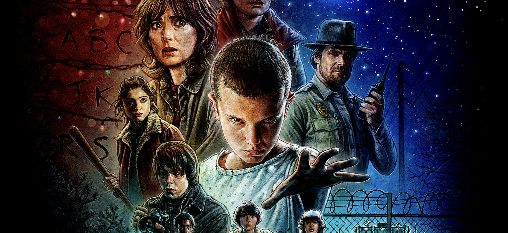
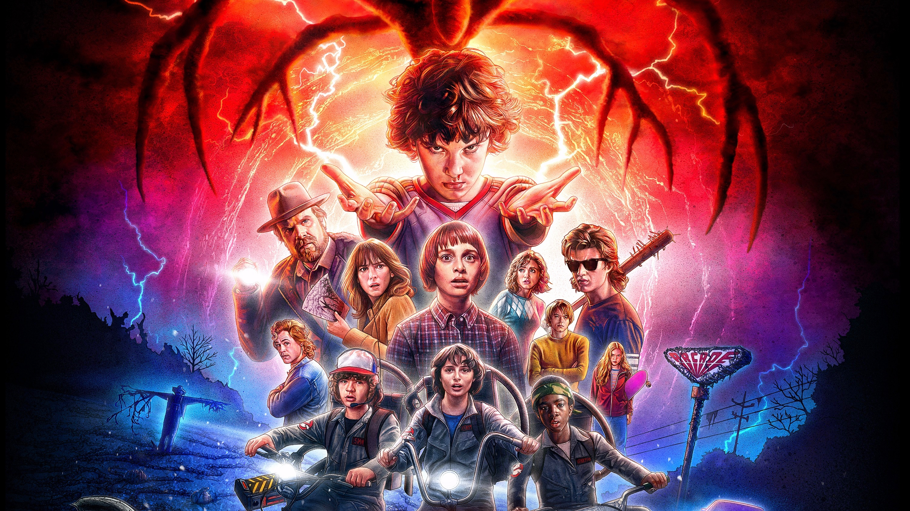
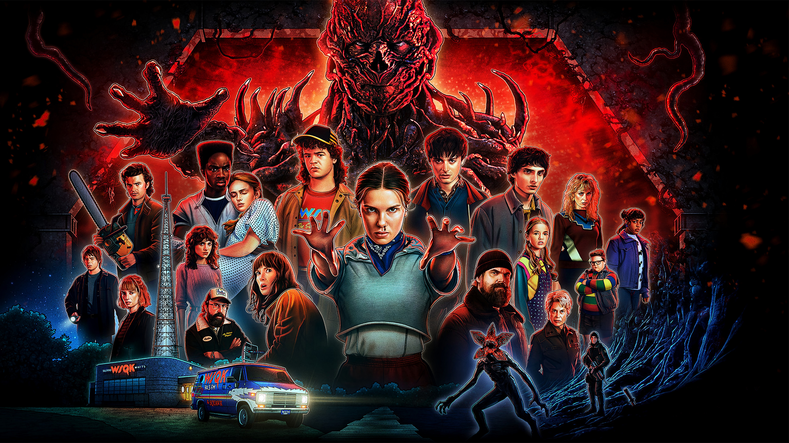

01 Seizoen 1 Als Will verdwijnt, begint een zoektocht die alles verandert. Bekijk seizoen 1 → 
02 Seizoen 2 De dreiging is niet voorbij. Hawkins staat opnieuw onder druk. Bekijk seizoen 2 → 
05 Seizoen 5 Het verhaal van Hawkins gaat richting het laatste hoofdstuk. Bekijk seizoen 5 →  >